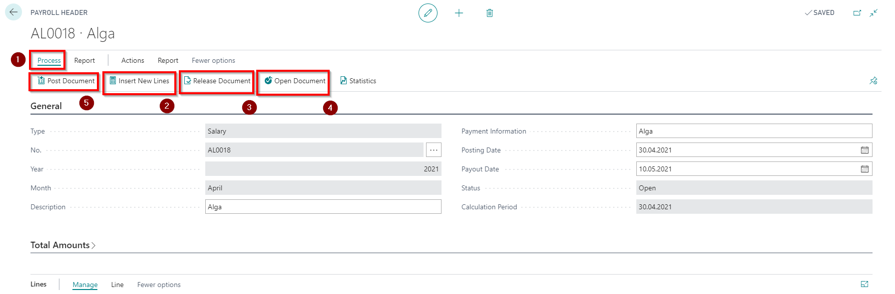

Salary calculation
After when
- position changes are registered
- salary changes are registered,
- updated salary tax book information,
- absences are registered,
- data is entered in the hour register, if applicable,
- one time benefits and deductions have been entered in the Component Register,
- entered monthly bonuses and deductions in the employee card, and other changes in employee data (such as an bank account)
- created Schedule
- created Accounting
- calculated overtime and set their usages
a monthly closing salary list should be generated. Each employee can be in only one current salary calculation within a month period. You can create multiple payrolls – for example, each department can have its own. Typically, a salary list for the terminated employees is created separately to correctly perform a payments.
A new salary list is created by clicking on the shortcut +Salary List in the LV Payroll Role Center or with a help of system search function. All salary lists are listed in Salary List.
The number will be assigned to the list automatically. Next, select Year and Month (automatically filled in with current year and month). The automatic generation of salary list lines is done by clicking on the button Process ( ) - Insert New Lines (
) - Insert New Lines ( ).
).
By using the function Insert New Lines filters can be applied to the employee number and to the department code. If the function is used without filters, then the list will include all employees for whom are specified any calculation amounts for this month.
After generating the salary list and initial check, it is recommended to change the status of the list from Open to Released ( ). This protects the calculation data against accidental corrections. If necessary, the status can be changed in the opposite direction (
). This protects the calculation data against accidental corrections. If necessary, the status can be changed in the opposite direction ( ).
).

In the Salary list toolbar sections Reports and Actions following additional functions are available:
- Pay Slip – possibility to print and send salary slips for salary payment.
- Export to Payment Journal – payment records will be prepared for export to the payment journal, from which they can be further exported to the bank and posted.
- Detailed Salary List – printout of the prepayment list for approval.
In the Salary list tab Lines - Lines the following functions are available for each selected employee:
- Employee Details – a shortcut to all historical calculation data related to the particular employee is available.
- Worktime – data for the reporting month on planned and actual working hours are available.
- Average Gain – if the employee has had a paid absence in the reporting month, then the data on the absence and the average earnings used to pay for the absence can be viewed.
The salary list can be changed and deleted until it is posted and/ or sent to the payment journal. If corrections or adjustments become necessary after the payroll has been sent to payment journal, paid and/ or posting, recalculation functions should be used. Correction can be made to all document or just to a single line for a selected employee (or several employees). If you need to correct the entire document, click on the buttons Actions - Create Correction Document. If you only need to correct only some employee lines, in the Lines tab, select the line (or several lines) you want to correct and click Lines - Create Correction. Corrective transactions are described more detailed in further chapters.
In order to generate a report related to the salary calculation, it is not necessary to post the salary list. All payroll reports are generated from salary lists, regardless of their status.
If the salary is calculated and Remaining Payment Amount is a negative amount (the employee is overpaid), then the overpaid amount is transferred to the next salary calculation (as a deduction) with a help of an entry generated by the system in the Component Register.